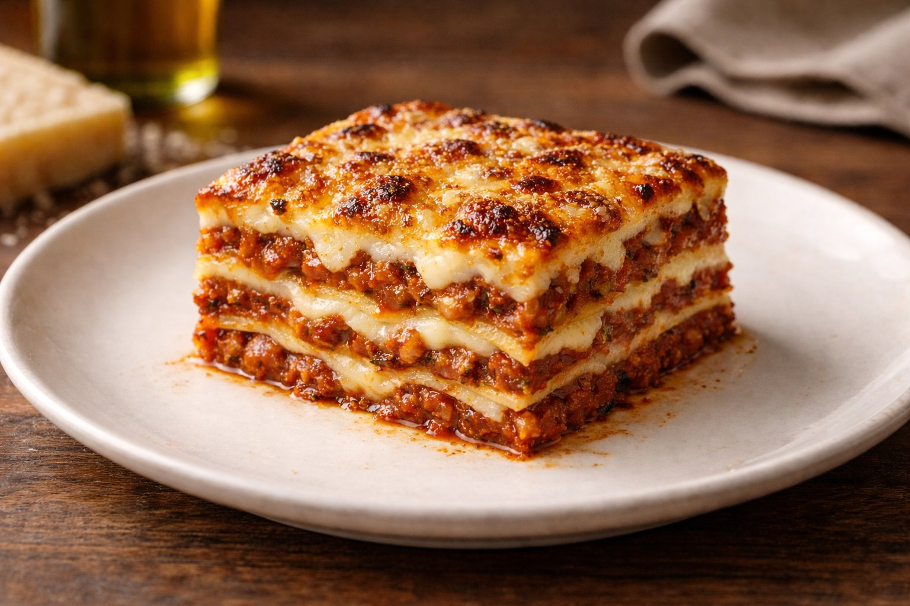

The Maestro's standard, written for the line. Follow the steps, hit the cues, ship the product. No questions. No shortcuts. No compromises.

Heavy hand on the top layer. The crust depends on it.
Pan: full hotel pan, lightly oiled. Five full layers total. Repeat the sequence below five times.
Cool at room temperature 20–30 min. Then transfer to fridge until fully firm. Cutting hot lasagna will collapse the layers.
Once firm, portion into 12 equal pieces. Clean, vertical knife strokes. Wipe blade between cuts for clean lines.
Transfer each portion to foil containers. Into the blast chiller immediately. Freeze fully before moving to long-term storage.
Frozen portions are only as good as the reheat. Match the dine-in experience every single time. Crust on top, molten center, layers intact. If it doesn't hit, it doesn't go out.
"Browning the meat is non-negotiable. No color, no flavor."
"Wine before tomato. Always. The acid needs the alcohol gone first."
"Three hours minimum on the ragù. The clock is the recipe."
"Besciamella stays loose. Heavy sauce makes heavy lasagna."
"Ice bath for the pasta. Mandatory. No exceptions."
"Do not rush the cooling. A hot cut is a broken pan."